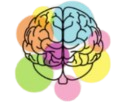
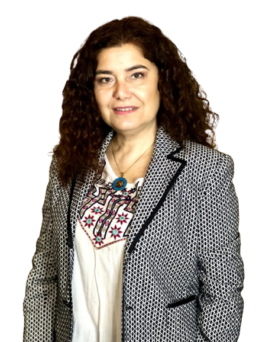

bienestar emocional que te mereces
Espacio de escucha y acompañamiento psicológico para tu bienestar emocional.
AGENDAR CITA
¿En qué puedo ayudarte?
Acompañamiento psicológico profesional para diferentes momentos de tu vida.
Manejo del estrés, preocupación y ataques de pánico.
Fortalecimiento personal y confianza en tu identidad.
Mejora de vinculos afectivos y resolución de conflictos.
Desarrollo personal y logro de una vida con propósito y bienestar.
Apoyo psicológico para afrontar los desafíos y cambios de la maternidad.
Soy la Lic. Marta Cano, psicóloga con más de una década de experiencia en el acompañamiento emocional y terapéutico.
Mi formación incluye psicologia clinica, terapia sistémica familiar y coaching profesional, lo que me permite ofrecerte un espacio seguro y profesional para tu crecimiento personal.
CONOCER MÁS
Trabajo desde un enfoque integrador y sistémico, centrado en la persona y su contexto.
Creo en la importancia de la escucha activa, la empatia y el respeto por tu historia, para construir juntos caminos de bienestar y transformación.
Cada proceso es único, como tú.
Algunos testimonios de mi trabajo
Estoy aqui para acompañarte en tu proceso.
Escribeme y da el primer paso hacia tu bienestar.
¿Cuánto dura la sesión online?
+Cada sesión tiene una duración aproximada de 1 hora, un tiempo pensado para conversar con calma y trabajar en tu proceso terapéutico.
¿Por dónde se realizan las sesiones?
+Las sesiones se realizan a través de Google Meet, una plataforma segura y confiable que permite mantener nuestras consultas de forma cómoda y confidencial.
¿Recibiré materiales o ejercicios durante el proceso?
+Cuando sea necesario, compartiré contigo materiales de apoyo, ejercicios o recursos prácticos que complementen el trabajo realizado durante las sesiones.
¿Hay actividades para realizar después de la sesión?
+En algunos casos, propondré actividades o pequeñas tareas para que puedas continuar trabajando en tu bienestar emocional entre una sesión y otra.